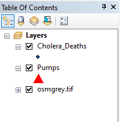
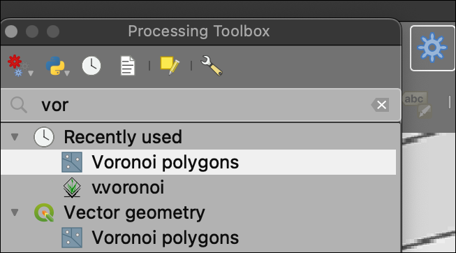
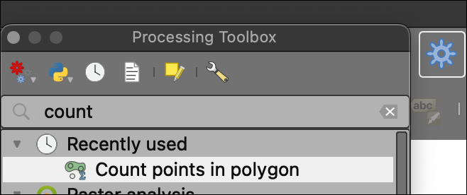
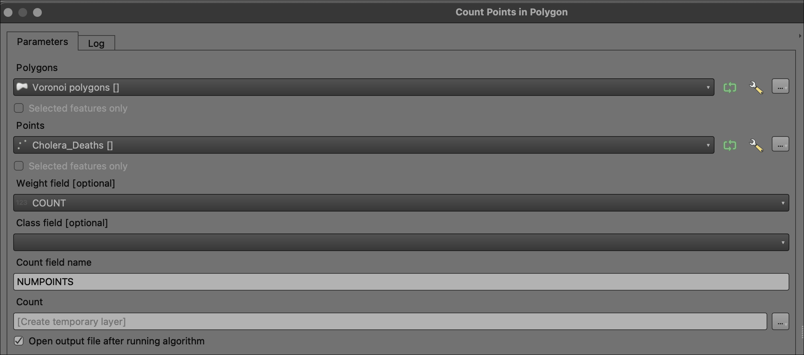

Class 2 Lecture Demonstration Lab 1: QGIS Interface Detailed
Spring 2025 | UENV3200 + UURB3210 | CRN: 11008 + 11009
Preamble
In this first demonstration lab, conduct Assignment I | Part III - The QGIS application interface section in order to familiarize and explore the QGIS interface prior to using it during your independent assignment 1. Further, review the Assignment I | Part III - File Management for QGIS that can help you begin good data management for QGIS to run smoothly.
Data

Part I:
- In order to access and display spatial data within QGIS, the data must first be uncompressed and connected. The following video guide covers the ways that data can be connected to QGIS with an emphasis on establishing a good directory file path and project folder hierarchy. While it may seem simple, maintaining good file structure when working with QGIS can save a lot of errors and undue trouble:
- Next, review the basics of the QGIS data interface. Further, deliverables for the course will often take the form of cartographic PDF exports, i.e. maps. Once data is loaded, it can be symbolized, mapped and exported across a variety of export types, including PDF. This Part III will cover the location of the various capacities needed to accomplish a fundamental workflow: loading spatial data, symbolizing the data and producing cartographic outputs.
To start, review the core QGIS 3.x interface. To assist, print out the letter sized PDF of the interface handout:

Review the following components that correspond with the numbered interface locations show above:
- Map Canvas - The main display module for spatial data.
- Browser Panel - Directory connections and file hierachies.
- Layers Panel - A stacked display of data within the QGIS project.
- Toolbars - Various tasks common to typical GIS workflows.
- Menu Bar - Top level navigation device with drop-down capacity per component.
Within the Menu Bar, Plugins is located. This is a critical component of the topline Menu Bar. Here there are two sub-components - the plugins themselves and the Python Console. Throughout the course we will utilize plugins to accomplish certain tasks. Further, many functions within QGIS rely on python in the background which is installed alongside QGIS on the first install.
If you want to learn more about how to script and run python functions for spatial analysis within QGIS, a recommended primer to get started is located as follows:
PyQGIS 101: Introduction to QGIS Python programming for non-programmers

- Typically a GIS project is launched with at least some data that is inherently spatial - administrative boundaries, points locations, raster base layers, ect. To do this first step, make sure the application is open, the Layers and Browser panels are active (if they are not both active: view > panels > toogle on layers then browser or browser 2:

Next, download the compressed assignment data:
Use an compression utility (7 Zip or Keka) to unzip the data and expand the directory. The machine desktop is a good location to place your working directory. Once unzipped, your data structure prior to QGIS should look like the following:
The top level directory
c1.natural.earth.datacontains the following data:ne_110m_admin_0_countries

ne_110m_populated_places_simple

- Once organized on your machine, point QGIS to the data. This is accomplished by right-click on the
Open Data Source Layertool from the Toolbar:

- Both features in the assignment data are vector features, so the data type will be selected as Vector > File > Vector Dataset(s) >
file.name.shp:

its the .shp component of the ‘sidecar’ files listed in the sub-directory that is the critical file to open. Make sure to follow open with add so that the .shp is indeed added to the Map Canvas.
- Repeat the step above, but this time point to the
ne_110m_populated_places_simple.shpfile located in the sub-directoryne_110_populated_places_simple. The resulting Map Canvas should look similar to the following with two feature layers added to the Layers Panel, also displayed in the Map Canvas :

Color symbology per layer is random upon the initial data load in QGIS. We will make simple changes to the defaults for this assignment. Keep in mind that upcoming assignments will feature much more robust symbol manipulation; for now simple manipulation is warranted.
- Once assignment
.shpdata is loaded correctly - Populated Places on top of County Administrative Boundaries - immediately save the project via Project > Save As >assignment1.qgs.
There is a compressed project save convention (.qgz) and another that is not compressed (.qgs). Proceed with the uncompressed option.
Part II:
In the first week’s Demonstration Lab 1, we will utilize a vector file type that has been a longstanding file extension in ‘modern GIS’ of the past 2-3 decades. Known as the Shapefile, this file type is somewhat ‘complicated’ as it contains multiple sidecar files in order to operate correctly:
In most cases the relationship between the source file and the sidecar file is based on the file name; sidecar files have the same base name as the source file, but with a different extension. The problem with this system is that most operating systems and file managers have no knowledge of these relationships, and might allow the user to rename or move one of the files thereby breaking the relationship.
Important to note are the three (3) mandatory files that are needed for shapefiles to operate within a GIS. They are as follows:
- To start, navigate via a browser to geojson.io. We will create a points feature using the interface, but instead of downloading our points feature as a
.geojsonfile type, we will choose.shpor Shapefile:
.shp and its various sidecar filesPart III:
Recreating John Snow’s ‘Broad Street Pump’ Map

Starting from our conclusion last week, we will conduct together a ‘modern’ recreation of the John Snow Cholera Mapping within QGIS. Here we will not only utilize the QGIS interace, but run an analysis workflow, albeit very short yet effective:
We will first download the recreation data of John Snow’s ‘Broad Street Pump Map’ and run a series of GIS analysis tasks to derive insight and produce quantitative results about both the location of the pumps and the resulting deaths from the Broad Street Pump itself.
Data
The data for this demonstration lab comes from the QGIS project located HERE.
To start, directly download a prepared, compressed directory which includes all necessary data as well as a QGIS .qgs project file.
Once complete, extract the zipped directory and open the directory folder. The results - including the project .qgs - should appear as follows:

Step 1: Load Data
- Navigate to the directory folder
demo_1-partII-JS_datathen double-click thedemo_part2-john-snow.qgsfile. This will prompt QGIS to load the project on the machine. The Table of Contents should feature the following 2 vector layers and 1 raster layer (.tif):


Step 2: Create Thiessen Polygons
Thiessen polygon boundaries define the area closest to each feature relative to all other features. Thiessen polygons are generated from a set of three or more features. In this case, our features will be the Pumps points.
Thiessen polygons are also referred to as spatial monopoly or Voronoi diagrams. This type of analysis assumes that there are clusters of features that are distinct within the larger dataset of features; again in this case, the Pumps points are our input features.
This type of analysis needs planar units, not degrees, for valid output results. We will touch on this issue in class 2, and more in depth in class 6 - Map Projections. For now, note that the project utlizes the British National Grid with a linear unit of meter, thus we don’t need to adopt another map projection in order to proceed with analysis.


meter.QGIS provides many analysis tools easily accessible, often from the Processing Toolbox:


voronoi.Utilizing the Voronoi polygons tool, we will input the Pumps and output to a temporary file location:

Voronoi polygons Analysis Tool Dialog Box within the Processing Toolbox.The results of the analysis tool should be a new polygon feature that represents the ‘clusters’ or ‘neighborhoods’ of distinct pump locations. If we open the attribute table of the new polygon feature, we can ascertain which polygon features the predominance of death locations via the ID attribute:

Voronoi polygons result.The resulting Voronoi Polygons tell us the extent of distance, or travel, for each pump inside its most ‘efficient’ neighborhood. This gives us an idea of how far (euclidean distance) one would travel efficiently within one polygon before crossing into another polygon where another pump would be most efficient to our travel.
What this spatial analysis does NOT tell us is how many deaths have occurred within each pump’s ’neighborhood, i.e. its Voronoi polygon. To do this analysis task, we will turn to Step 3 below.
Step 3: Report Cholera Deaths within each pump Voronoi polygon
To do this next analysis step, we will utilize a common GIS tool whereby we both weight and count an attribute inside a polygon feature; in this case, we want to count deaths within each pump ‘neighborhood’.
To start, we can easily see just from the mapping thus far that the Voronoi polygon for the ‘Broad Street Pump’ features a predominance of death points. We can assume that this concentration likely also contains the top aggregate count of deaths from those points within their respective Voronoi polygon. So we can test this initial exploratory assumption by the count points in polygon tool.
Search for count points in polygon as we did for the previous tool. This will point to the following tool dialog box. Input Cholera_Deaths as the Target Features and utilize the COUNT attribute as the Weight and run the tool with the output as a default temporary file.

count points in polygon tool.
count points in polygon Dialog Box with parameters set correctly.Once the tool has run, we will receive a new polygon feature dataset that now has all the original Cholera Death events aggregated to their respective Voronoi polygon:
count points in polygon results.Clearly, polygon ID 1 in the example contains the predominant death count; and of course this is the Broad Street Pump central Voronoi polygon ‘neighborhood’.
Concluding Remarks
In this second demonstration lab, we have become oriented to the QGIS interface. In the assignment, you will further add Cartographic Output to your workflow. The following references are good resources to learn more about QGIS generally, and the John Snow historical mapping and its recreation in modern GIS.